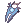
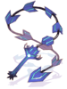
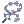
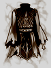

Ghost Palace
| This quest or instance is repeatable. | ||
|---|---|---|
| Cooldown | Tickets Available | |
|
Resets at 0:00 |
Solo: 0 | Party: Not Available |
Overview
| Requirements | |
|---|---|
| Base Level: | 120 |
| Starting Point: | dali02 44/128 |
| Rewards | |
| Experience: | 22,500,000 BEXP, 12,500,000 JEXP |
| Items: | Gray Shards Thanatos Weapons Gray Equipment Set |
Ghost Palace is one of the Instances that was introduced with the Heroes' Trails patch. It follows the tragic story of Sakray, from the original Ragnarok graphic novel, as he descends from being a faithful royal guard to becoming a cursed swordsman.
To enter this instance, talk to the Warper NPC and select Heroes' Trails; Ghost Palace.

Talk to the Unpleasant Royal Guard NPC in the Dimensional gorge to generate the instance, then talk to the dimensional device to enter it. You have 1 hour to complete this instance. If you happen to teleport out, or die in the instance, you will not be able to re-enter.

Walkthrough
Preparation: Bring a Token of Siegfried in case you die in the middle of running the instance. Also be prepared to fight a Ghost 3 element monster (Flaming Skull in Floor 2), the best way to do this is to bring some kind of elemental converter with you, preferably Holy or Fire.
- You arrive at the throne room of a palace. Talk to the King to witness Sakray's appointment as the bodyguard of Princess Tiara for her marriage with a Prince.
- When the dialogue finishes, several Bloody Murderers and Ragged Zombies will appear. Exterminate them and collect the gray shards. (Use @autoloot for convenience.) A portal will appear, leading towards the 2nd floor.
- You see Sakray meeting with Princess Tiara in her room to the east. Talk to Princess Tiara to listen to their conversation.
- When the scene ends, several Wind Ghosts, Flame Skulls, and Dark Frames spawn. The portal to the 3rd floor opens when all of the mobs are killed.
- You enter a prison area where Sakray is restrained and interrogated. Talk to the King to watch the scene play out. When the dialogue ends, you will see Sakray talking to an invisible Cursed Spirit of Thanatos.
- As the conversation ends, several Ghouls, Skeleton Prisoners, and Zombie Prisoners appear. After killing a few of them, the 4th floor portal will spawn, followed by a larger swarm of mobs. It is advisable to kill every mob in this floor before entering the portal, to get more Gray Shards
- You return to the Throne room with several Khalitzburgs and Bloody Murderers. Kill all of them to advance.
- Several dead bodies will appear all over the floor, including the dead King. Sakray is seen confronting the Prince. Talk to the Prince to witness his reveal.
- When the scene ends, the Prince transforms into a Torturous Redeemer. Defeat him and the portal to the last floor will appear.
- You return to the jail scene where Sakray goes to see the dying Princess. Talk to Princess Tiara to see what happens.
- A wave of Skoguls, Dullahans, and Skeleton Prisoners will appear. Kill all of them.
- The Torturous Redeemer reappears, but is quickly vanquished by the now-corrupted Sakray. Speak with him to listen to what he has to say.
- The exit portal spawns to the south east. The King is standing next to it. Talk to him to exchange your Gray Shards for Thanatos Weapons or Gray Equipment.
- When you leave through the portal, a short message appears, and you will be rewarded with 2 Gray Shards and some EXP.
Thanatos Weapons
The Thanatos Weapons are magical weapons sculpted out of Gray Shard to counteract the power of the Devil Sword Thanatos. You can craft these weapons out of 200  Gray Shards at the King NPC before you exit the instance. Alternatively they may be crafted for 200 Gray Shards at the Dimension Wanderer NPC located just outside of the instance entrance.
Gray Shards at the King NPC before you exit the instance. Alternatively they may be crafted for 200 Gray Shards at the Dimension Wanderer NPC located just outside of the instance entrance.
| Image | Name | Description |
|---|---|---|
 Thanatos Dagger [1] Thanatos Dagger [1]
|
MATK +130.
Attack : 100 Weight : 80 Weapon Level : 4 Required Level : 120 Usable Jobs : Swordsman, Archer, Merchant, Thief | |
 Thanatos Sword [1] Thanatos Sword [1]
|
MATK +100.
Attack : 150 Weight : 70 Weapon Level : 4 Required Level : 120 Usable Jobs : Swordsman | |
 Thanatos Great Sword [1] Thanatos Great Sword [1]
|
MATK +120.
Attack : 280 Weight : 130 Weapon Level : 4 Required Level : 120 Usable Jobs : Swordsman | |
 Thanatos Axe [1] Thanatos Axe [1]
|
MATK +80.
Attack : 300 Weight : 400 Weapon Level : 4 Required Level : 120 Usable Jobs : Swordsman, Merchant | |
 Thanatos Hammer [1] Thanatos Hammer [1]
|
MATK +120.
Attack : 180 Weight : 300 Weapon Level : 4 Required Level : 120 Usable Jobs : Swordsman, Merchant, Acolyte | |
 Thanatos Spear [1] Thanatos Spear [1]
|
MATK +100.
Attack : 150 Weight : 300 Weapon Level : 4 Required Level : 120 Usable Jobs : Swordsman | |
 Thanatos Long Spear [1] Thanatos Long Spear [1]
|
MATK +50.
Attack : 250 Weight : 375 Weapon Level : 4 Required Level : 120 Usable Jobs : Swordsman | |
 Thanatos Bow [1] Thanatos Bow [1]
|
MATK +110.
Attack : 180 Weight : 130 Weapon Level : 4 Required Level : 120 Usable Jobs : Archer | |
|  Thanatos Katar [1] |
MATK +80.
Attack : 220 Weight : 180 Weapon Level : 4 Required Level : 120 Usable Jobs : Guillotine Cross | |
 Thanatos Knuckle [1] Thanatos Knuckle [1]
|
MATK +100.
Attack : 160 Weight : 60 Weapon Level : 4 Required Level : 120 Usable Jobs : Sura | |
| Thanatos Staff [1] |
MATK +200.
Attack : 100 Weight : 100 Weapon Level : 4 Required Level : 120 Usable Jobs : Mage, Acolyte | |
 Thanatos Two-Handed Staff [1] Thanatos Two-Handed Staff [1]
|
MATK +250.
Attack : 120 Weight :140 Weapon Level : 4 Required Level : 120 Usable Jobs : Mage, Acolyte | |
 Thanatos Violin Thanatos Violin
|
MATK +130.
Attack : 200 Weight : 200 Weapon Level : 4 Required Level : 120 Usable Jobs : Minstrel | |
|  |  Thanatos Whip [1] |
MATK +130.
Attack : 200 Weight : 70 Weapon Level : 4 Required Level : 120 Usable Jobs : Wanderer |
Thanatos Weapon Enchanting
Thanatos weaponry can be enchanted at the Dimension Wanderer NPC standing outside of the instance entrance. Each enchantment costs 75 Gray Shards and each enchantment will give both the first and second enchantment.
You can overwrite your existing enchantments by simply speaking with the NPC and paying another 75 Gray Shards to enchant. There is no chance of breaking.
Ask the Dimension Wanderer "Is that all you have?" to see what else she has and then select the appropriate weapon type for the weapon you have equipped. Enchantments for their respective weapon types are as follows:
Melee Weapon Enchants
| Melee Weapon Enchants | |||
|---|---|---|---|
| First Enchant | Min~Max | Second Enchant | Min~Max |
| Increase Physical Damage to Neutral Property | 1%~20% | Increase Physical Damage to Formless Race | 1%~20% |
| Increase Physical Damage to Water Property | 1%~20% | Increase Physical Damage to Undead Race | 1%~20% |
| Increase Physical Damage to Fire Property | 1%~20% | Increase Physical Damage to Brute Race | 1%~20% |
| Increase Physical Damage to Earth Property | 1%~20% | Increase Physical Damage to Plant Race | 1%~20% |
| Increase Physical Damage to Wind Property | 1%~20% | Increase Physical Damage to Insect Race | 1%~20% |
| Increase Physical Damage to Poison Property | 1%~20% | Increase Physical Damage to Fish Race | 1%~20% |
| Increase Physical Damage to Holy Property | 1%~20% | Increase Physical Damage to Angel Race | 1%~20% |
| Increase Physical Damage to Dark Property | 1%~20% | Increase Physical Damage to Demon Race | 1%~20% |
| Increase Physical Damage to Ghost Property | 1%~20% | Increase Physical Damage to Dragon Race | 1%~20% |
| Increase Physical Damage to Undead Property | 1%~20% | Increase Physical Damage to Demi-human Race | 1%~20% |
| No Weapon Penalty | Increase Physical Damage to Normal Class | 1%~10% | |
| Flat ASPD | 1~1 | Increase Physical Damage to Boss Class | 1%~10% |
| ASPD | 5%~10% | Attack | 3%~5% |
| Holy Property | Critical Damage | 5%~20% | |
| Dark Property | Indestructible | ||
| Water Property | |||
| Wind Property | |||
| Fire Property | |||
| Earth Property | |||
Magic Weapon Enchants
| Magic Weapon Enchants | |||
|---|---|---|---|
| First Enchant | Min~Max | Second Enchant | Min~Max |
| Increase Magic Damage to Neutral Property | 1%~20% | Increase Magic Damage to Formless Race | 1%~20% |
| Increase Magic Damage to Water Property | 1%~20% | Increase Magic Damage to Undead Race | 1%~20% |
| Increase Magic Damage to Fire Property | 1%~20% | Increase Magic Damage to Brute Race | 1%~20% |
| Increase Magic Damage to Earth Property | 1%~20% | Increase Magic Damage to Plant Race | 1%~20% |
| Increase Magic Damage to Wind Property | 1%~20% | Increase Magic Damage to Insect Race | 1%~20% |
| Increase Magic Damage to Poison Property | 1%~20% | Increase Magic Damage to Fish Race | 1%~20% |
| Increase Magic Damage to Holy Property | 1%~20% | Increase Magic Damage to Angel Race | 1%~20% |
| Increase Magic Damage to Dark Property | 1%~20% | Increase Magic Damage to Demon Race | 1%~20% |
| Increase Magic Damage to Ghost Property | 1%~20% | Increase Magic Damage to Dragon Race | 1%~20% |
| Increase Magic Damage to Undead Property | 1%~20% | Increase Magic Damage to Demi-human Race | 1%~20% |
| Variable Cast Reduction | 5%~10% | Increase Magic Damage to Normal Class | 5%~10% |
| Increase Healing Bonus | 5%~20% | Increase Magic Damage to Boss Class | 5%~10% |
| Reduce SP Consumption | 5%~10% | Magic Attack | 3%~7% |
| Skill Reuse Delay Reduction | 1%~5% | Variable Cast Reduction | 5%~10% |
Ranged Weapon Enchants
| Ranged Weapon Enchants | |||
|---|---|---|---|
| First Enchant | Min~Max | Second Enchant | Min~Max |
| Increase Physical Damage to Neutral Property | 1%~20% | Increase Physical Damage to Formless Race | 1%~20% |
| Increase Physical Damage to Water Property | 1%~20% | Increase Physical Damage to Undead Race | 1%~20% |
| Increase Physical Damage to Fire Property | 1%~20% | Increase Physical Damage to Brute Race | 1%~20% |
| Increase Physical Damage to Earth Property | 1%~20% | Increase Physical Damage to Plant Race | 1%~20% |
| Increase Physical Damage to Wind Property | 1%~20% | Increase Physical Damage to Insect Race | 1%~20% |
| Increase Physical Damage to Poison Property | 1%~20% | Increase Physical Damage to Fish Race | 1%~20% |
| Increase Physical Damage to Holy Property | 1%~20% | Increase Physical Damage to Angel Race | 1%~20% |
| Increase Physical Damage to Dark Property | 1%~20% | Increase Physical Damage to Demon Race | 1%~20% |
| Increase Physical Damage to Ghost Property | 1%~20% | Increase Physical Damage to Dragon Race | 1%~20% |
| Increase Physical Damage to Undead Property | 1%~20% | Increase Physical Damage to Demi-human Race | 1%~20% |
| No Weapon Penalty | Increase Physical Damage to Normal Class | 5%~10% | |
| Flat ASPD | 1~1 | Increase Physical Damage to Boss Class | 5%~10% |
| ASPD | 5%~10% | Attack | 3%~7% |
| Long Range Attack | 5%~10% | Critical Damage | 5%~20% |
| Indestructible | |||
Gray Equipment Set
The Gray Equipment Set is a set of armors, boots, cloak, helmet, and shield, sculpted out of Gray Shard and infused with Sakray's Abandoned Memories. They have a special ability of resisting the Holy element. You can craft these equipment out of 100 Gray Shards at the King NPC before you exit the instance. Alternatively they may be crafted at the Dimension Wanderer NPC for the same cost of 100 Gray Shards.
| Image | Name | Description |
|---|---|---|
| Armor of Gray [1] |
+10 MDEF.
Defense: 90 Weight: 240 Required Level: 120 Usable Jobs: Swordsman, Archer, Merchant, Thief | |
|  | Gray Robe [1] |
+10% Holy Resistance.
Defense: 55 Weight: 130 Required Level: 120 Usable Jobs: Mage, Acolyte |
| Gray Helmet [1] |
+3% Holy Resistance.
Defense: 35 Weight: 45 Required Level: 120 Usable Jobs: All Jobs | |
 Gray Cloak [1] Gray Cloak [1]
|
+5% Holy Resistance.
Defense: 45 Weight: 60 Required Level: 120 Usable Jobs: All Jobs | |
 Boots of Gray [1] Boots of Gray [1]
|
+2% Holy Resistance.
Defense: 25 Weight: 40 Required Level: 120 Usable Jobs: All Jobs | |

|
Gray Shield [1] |
+10 MDEF.
Defense: 75 Weight: 200 Required Level: 120 Usable Jobs: All Jobs |
Dimension Wanderer
The Dimension Wanderer NPC stands just outside of the instance, to the immediate right of where you warp in after using the Warper NPC.
In addition to being able to craft the Gray Equipment Set and craft plus enchant Thanatos Weapons, she also sells the  Knight Sakray Card for 10,000 Gray Shards.
Knight Sakray Card for 10,000 Gray Shards.
To purchase one, ask the Dimension Wanderer if "Is that all you have?".
| Card | Type | Effect |
|---|---|---|
| Weapon | ATK +20
Increase physical damage dealt to Demon and Undead race monsters by 30% |